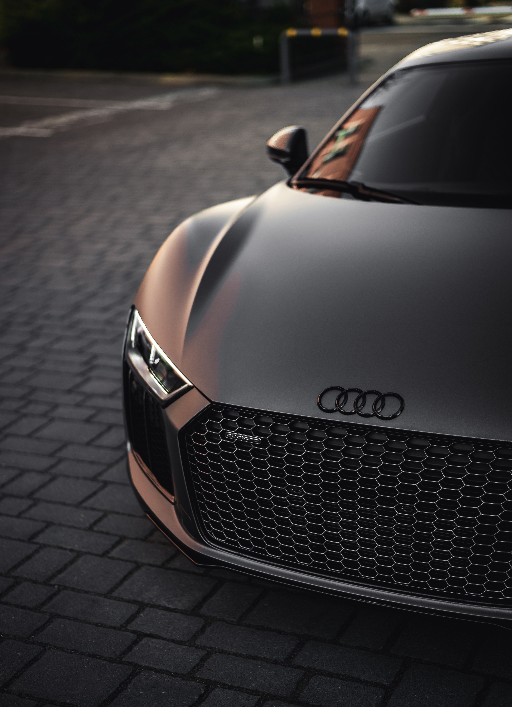

Social Media
Hey, I have a small social presents online.
Feel free to follow the links down below.

Personal Interest
Hello, the vehicle above is the Audi R8.
The R8 is the dream vehicle for many because of looks but,
I will own this car some day (not only because of the luxury brand)
more because my uncle had the A7 and that car closely resembles the R8.
The R8 outshines it's competition by a long run providing record speeds up to 60 mph in 3.2 seconds.